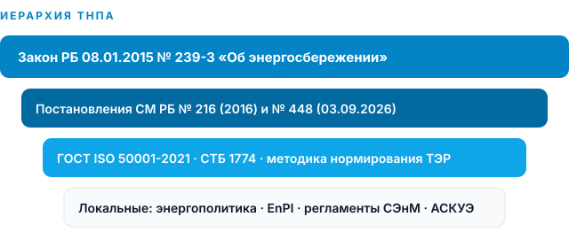
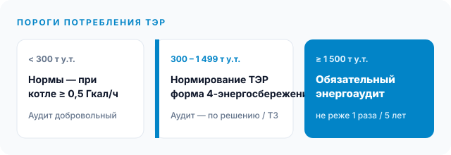
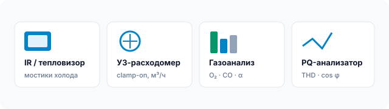
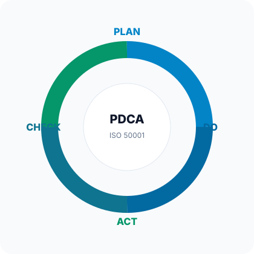
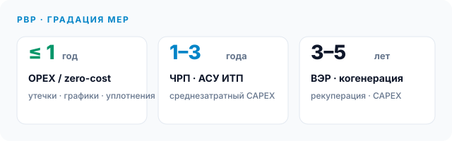
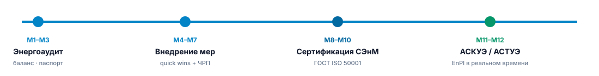

Закон
Закон Республики Беларусь от 08.01.2015 № 239-З «Об энергосбережении» (изм. № 111-З от 24.05.2021, № 128-З от 31.12.2025). Ст. 10–14 — энергоаудит; ст. 16–18 — нормирование ТЭР; ст. 19 — планы энергосбережения.
Аналитический доклад · производственный сектор
Практическая реализация в правовом и экономическом поле Республики Беларусь
Нормативная база
Закон № 239-З
пост. СМ РБ № 216 / № 448
Закон Республики Беларусь от 08.01.2015 № 239-З «Об энергосбережении» (изм. № 111-З от 24.05.2021, № 128-З от 31.12.2025). Ст. 10–14 — энергоаудит; ст. 16–18 — нормирование ТЭР; ст. 19 — планы энергосбережения.
Департамент по энергоэффективности Государственного комитета по стандартизации РБ. Политика, графики обследований, согласование ТЗ, надзор за нормами расхода ТЭР, energoeffect.gov.by.
ГОСТ ISO 50001-2021 (с 01.06.2021, взамен СТБ ISO 50001-2013). Положение об энергоаудите — пост. СМ РБ от 18.03.2016 № 216 (изм. № 448 от 03.09.2026). СТБ 1774 — энергетический паспорт. Примерная форма паспорта объекта обследования утверждается Советом Министров.
Форма 4-энергосбережение (Госстандарт): выполнение мероприятий по экономии ТЭР и росту местных ТЭР. Нормирование удельных расходов — с 300 т у.т./год и/или при теплоисточнике ≥ 0,5 Гкал/ч (ст. 17).

Обязательный энергоаудит
ст. 11 Закона № 239-З
пост. СМ РБ № 448
Порог обязательности
1 500
т у.т. суммарного годового потребления ТЭР и выше — юрлицо в графике обязательного обследования
Цикл обследования
5 лет
не реже одного раза; графики РОГУ, облисполкомов и Мингорисполкома согласовывает Департамент
Штат аудитора
≥ 3
аттестованных экспертов-энергоаудиторов и поверенная приборная база
СЭнМ-преференция
3 г.
ГОСТ ISO 50001-2021: облегчённый отчёт — анализ эффективности ТЭР за 3 года

Методика обследования
ст. 10 Закона № 239-З
потенциал · паспорт · нормы
Динамика потребления ТЭР (не менее 36 мес.), договоры энергоснабжения, тарифы, структура топливно-энергетического баланса, режимы, ремонты, данные АСКУЭ.
Замеры фактических нагрузок, расход теплоносителей, качество электроэнергии, выявление необоснованных потерь, утечек, сверхнормативных холостых ходов.
Фактический баланс vs нормативный. Сведение прихода/расхода по видам ТЭР, выделение ВЭР, коммерческих и технологических потерь, неучтенного расхода.
Пакет мер с CAPEX/OPEX, сроком окупаемости PBP, NPV при необходимости. Включение в план энергосбережения; предложения по прогрессивным нормам (ст. 14).
Выходные документы: отчёт об энергетическом обследовании, энергетический паспорт объекта, перечень энергосберегающих мероприятий, обоснование перехода на прогрессивные нормы расхода ТЭР (≥ 1 500 т у.т.).
Средства измерений
поверенный парк СИ
не менее 3 экспертов

Штат ≥ 3 профильных аттестованных экспертов; средства измерений в сфере законодательной метрологии — с действующей поверкой. Протоколы замеров входят в отчёт и паспорт.
Ограждающие конструкции, теплотрассы, футеровка печей. Детекция мостиков холода, дефектов изоляции, присосов, перегрева контактных соединений.
Безнарезной (clamp-on) учёт расхода жидкостей в тепловых и технологических сетях. Сверка коммерческого и технического учёта, поиск неучтённого расхода.
Состав уходящих дымовых газов: O₂, CO, CO₂, температура. Оптимизация коэффициента избытка воздуха α, снижение q₂ и химического недожога.
Качество электроэнергии (ГОСТ 32144), реактивная мощность, cos φ, THD, несимметрия. База для ЧРП, компенсации Q и исключения штрафных составляющих.
Система энергетического менеджмента
PDCA · EnB · EnPI
внутренний аудит ≥ 1 / год

Энергополитика высшего руководства. Энергетический анализ. Значимое энергоиспользование (SEU). Базовые линии EnB. Показатели результативности EnPI. Цели, задачи, планы действий.
Регламенты эксплуатации и обслуживания энергоёмкого оборудования. Компетентность и обучение персонала. Операционное управление SEU. Закупки с учётом энергоэффективности.
Мониторинг EnPI против EnB. Внутренний аудит СЭнМ — минимум 1 раз в год. Инструментальный мониторинг, анализ отклонений, несоответствия.
Корректирующие действия. Пересмотр целей и EnPI. В РБ сертификат даёт облегчённый формат обязательного энергоаудита (анализ за 3 года + приоритеты экономии).
Нормы ТЭР и портфель мер
ст. 16–18 Закона № 239-З
Е-Паслуга · пост. № 448

Уплотнение контуров, оптимизация графиков пуска, исключение утечек сжатого воздуха, отключение холостого хода, гидравлическая наладка, режимная наладка котлов (α).
ЧРП на насосах и тягодутьевых механизмах, автоматизация ИТП, компенсация реактивной мощности, замена освещения и теплоизоляции трубопроводов.
Когенерация, утилизация вторичных энергоресурсов, рекуперация тепла уходящих газов и стоков, модернизация теплогенерирующих установок.
Институт ответственности
СЭнМ · АСКУЭ · АСТУЭ
кросс-функциональный контур
Оперативное управление энергохозяйством, контроль лимитов и удельных норм, координация СЭнМ, взаимодействие с Департаментом, ведение EnPI/EnB, подготовка 4-энергосбережение.
Кросс-функциональная группа: главный технолог (нормы на единицу продукции), главный механик (состояние оборудования), финансово-экономический блок (CAPEX, PBP, включение в инвестпрограмму). Утверждение приоритетов SEU.
АСКУЭ — автоматизированная система контроля и учёта электроэнергии. АСТУЭ — автоматизированная система технического учёта энергоресурсов (тепло, пар, газ, сжатый воздух). Телеметрия в реальном времени как источник EnPI и доказательная база аудита.
Результативность · 12 месяцев
уд. расход ТЭР · ROI
аудит → СЭнМ → учёт
Ключевые KPI
Δq
Снижение удельного расхода ТЭР на единицу продукции, %/год. Соблюдение установленных текущих и прогрессивных норм. Доля ВЭР и местных ТЭР.
Финансовый результат
ROI
Снижение доли энергозатрат в себестоимости. PBP портфеля мер. NPV CAPEX-проектов 3–5 лет. Исключение сверхнормативного потребления.
Институциональный эффект
ISO
Сертификация ГОСТ ISO 50001-2021 → облегчённый энергоаудит. Готовность паспорта и плана мероприятий к включению в госпрограммы.

Месяцы 1–3
ТЗ, согласование с территориальным органом, документарный и инструментальный этапы, баланс, паспорт.
Месяцы 4–7
Quick wins (PBP ≤ 1 года), запуск ЧРП/ИТП, фиксация экономии в форме 4-энергосбережение.
Месяцы 8–10
Энергополитика, EnB/EnPI, внутренний аудит, анализ руководством, орган по сертификации ГОСТ ISO 50001.
Месяцы 11–12
АСКУЭ/АСТУЭ, дашборд EnPI, постановка мониторинга отклонений от норм расхода ТЭР.